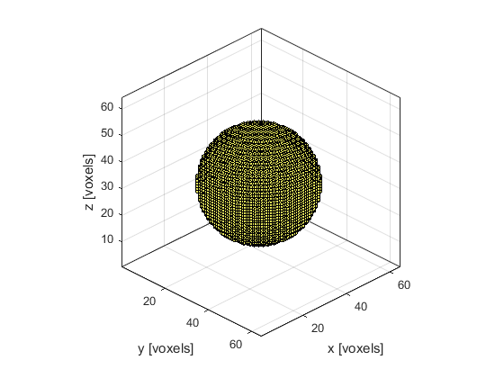

makeBall
Create a binary map of a filled ball within a 3D grid.
Syntax
ball = makeBall(Nx, Ny, Nz, cx, cy, cz, radius)
ball = makeBall(Nx, Ny, Nz, cx, cy, cz, radius, plot_ball)
Description
makeBall creates a binary map of a filled ball within a three-dimensional grid (the ball position is denoted by 1's in the matrix with 0's elsewhere). A single grid point is taken as the disc centre thus the total diameter of the ball will always be an odd number of grid points. The plot that is displayed after calling makeBall(64, 64, 64, 32, 32, 32, 20, true); is given below.

Inputs
Nx, Ny, Nz |
size of the 3D grid [grid points] |
cx, cy, cz |
centre of the ball [grid points] |
radius |
ball radius [grid points] |
Optional Inputs
plot_ball |
Boolean controlling whether the ball is plotted using voxelPlot (default = false) |
Outputs
ball |
3D binary map of a filled ball |
Examples
See Also
makeCircle,
makeDisc,
makeSphere